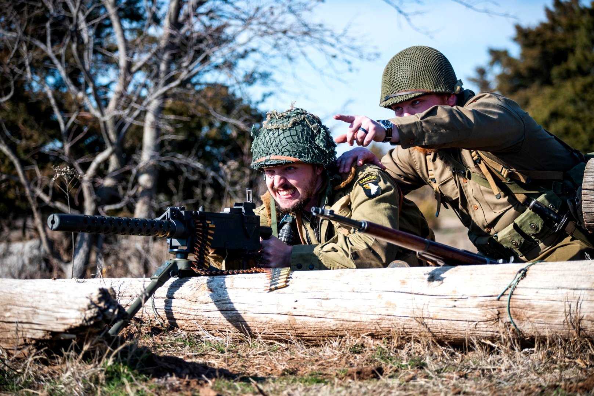

THE PROPERTY

250+ ACRES OF OKLAHOMA TERRAIN
The Burial Mound Event Center sits in the rolling fields and wooded terrain of Pawnee County, north-central Oklahoma. Established in 2022, the facility spans two farms connected by county roads — with courses stretching across open grassland, dense tree cover, hills, draws, and natural obstacles.
The property has hosted competitive shooting since at least 2015, when the original Oklahoma Run N Gun first brought centerfire biathlon to these fields. Today, The Burial Mound is recognized as one of the longest continually running Run N Gun venues in the country, drawing 130–170 competitors per event who consistently sell it out.

BUILT FOR COMPETITION
From stage three to stage four, the course can span 2.5 miles alone. Engagement distances range from 5 yards on pistol stages to 600 yards on the rifle range. Physical obstacles — cargo nets, walls, tunnels, embankment climbs — are woven into courses that traverse the full breadth of both properties.
Shooting stage props include vehicles, swings, buildings, hatches, barrels, and improvised positions that force competitors to shoot in conditions that aren't perfect — which is exactly the point.